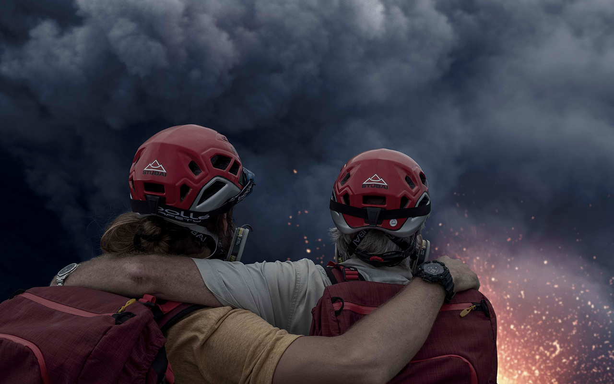

O local da Terra que mais apresenta processo de vulcanismo é chamado de “Círculo de Fogo do Pacífico”, que reúne aproximadamente 80% dos vulcões do mundo. Isso ocorre porque na região há intenso choque das placas tectônicas.
Curiosidades e Recordes
Existem aproximadamente 1.500 vulcões ativos em todo o planeta Terra. Sim, pois em outros planetas do Sistema Solar também existem vulcões. Anualmente, em nosso planeta, cerca de 70 vulcões entram em erupção.
A brasileira Rosaly Lopes é astróloga, geóloga planetária e vulcanóloga, trabalha na Nasa desde 1991 e entrou no Guinness Book of World Records 2006 pela descoberta de 71 vulcões ativos na lua vulcânica Io.

Atleta da Natural Extremo Rafael Bridi na matéria do Fantástico do domingo dia 21 de Junho de 2020. Travessia de Slackline no vulcão no pacífico sul. O catarinense Rafael Bridi entrou para o Guinness Book (livro dos recordes) ao atravessar a cratera de um vulcão em Vanuatu, na Oceania. A aventura será contada no documentário “LavaLine”, atualmente em pós-produção e com lançamento previsto ainda para este ano.
| Nome | Localização | Data | Número de Mortos |
|---|---|---|---|
| Monte Tambora | Indonésia | 1815 | mais de 71 mil |
| Vulcão Krakatoa | Indonésia | 1883 | mais de 36 mil |
| Vulcão Nevado del Ruiz | Colômbia | 1985 | mais de 23 mil |
| Vulcão Vesúvio | Itália | 79 d.C. | mais de 16 mil |
| Vulcão Santa María | Guatemala | 1902 | mais de 6 mil |
| Fonte: Aventuras na História - Uol | |||